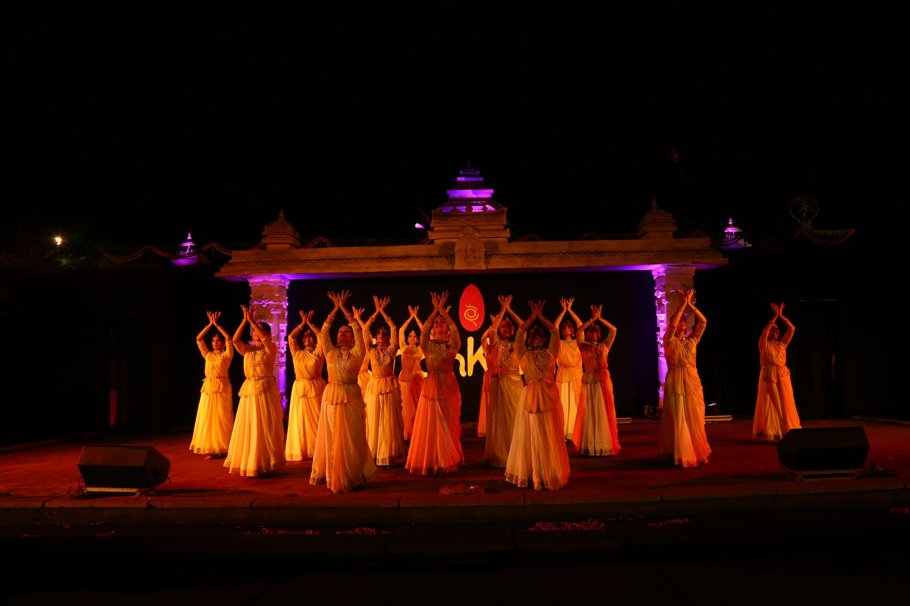
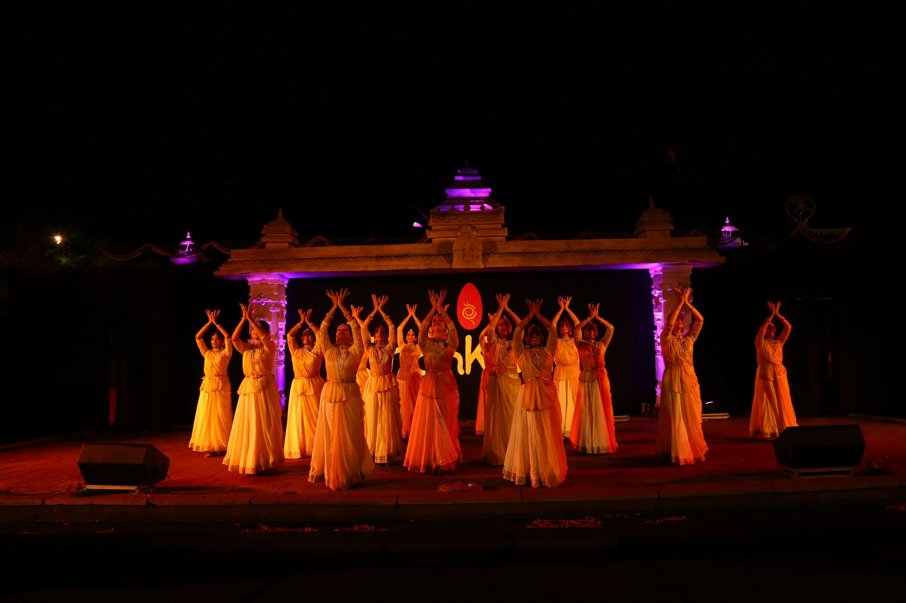
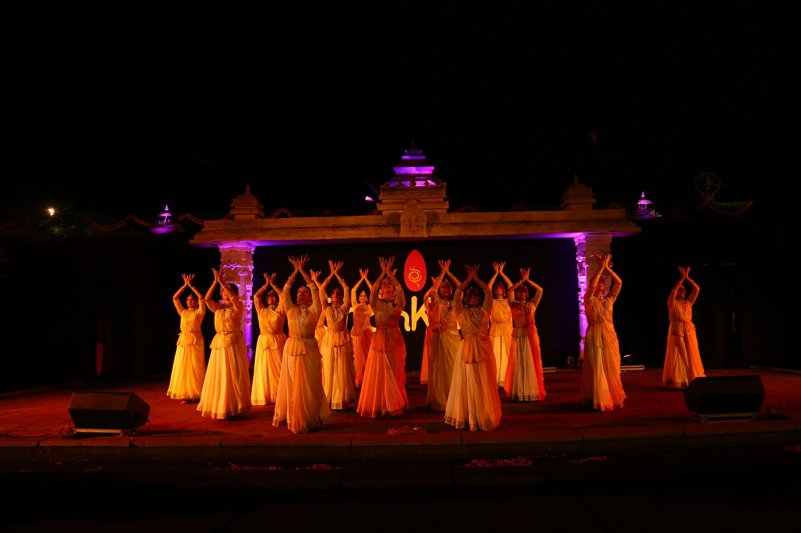

Articulate Dance Studios
A Unit of Articulate Trust for Arts
Performance
 

Exceptional Training Center for
KATHAK
Classical Dance
Bangalore
Mysore
Dance an of worship
Body An instrument of devotion
After two decades and half extensive
performances and a decade of teaching experience in India and many countries around
the world, Karnataka Kalashree Guru Mysore B Nagaraj established ARTICULATE
DANCE STUDIOS in Bangalore as a unit of ARTICULATE TRUST FOR ARTS to impart
training in KATHAK to aspirants of the art form. Many disciples trained at this school has
carved a niche for themselves in the Horizon of Indian Classical Dance. The primary
training disciples here receive is of the Lucknow Gharana but also touch upon Jaipur
and Banaras Gharana too to create a comprehensive canvas of the KATHAK form that Shambhu
Maharaj Ji and Sundarprasd ji imparted to Guru Dr Maya Rao and Guru Smt Chitra
Venugopal, of Natya Institute of Kathak and Choreography, under whom Guru Nagaraj was trained.
Under Guru Mysore B Nagaraj's
leadership, the performing unit of the studios have performed in prestigious
dance platforms winning accolades. Articulates home productions on thematic
choreographies have been highly acclaimed.
Aspirants of Kathak are encouraged to
take up Examination that are certified by recognized and accredited Dance
Institutions and deemed Universities. Students also take part in various
activities of the Trust to enrich themselves through Workshops, Talks and other
cultural participation.
KATHAK
Kathak as seen today is a beautiful Hindu Dance Art that has won the status of
one of the Classical Dance forms of the country. It has a hoary history that goes
back to the times of the Puranas. What used to be the art of storytelling, to
spiritually and morally uplift, by the wandering Bards in the Northern parts of
India, sought patronage in the Temples before it landed as an art of both
spirituality and entertainment in the courts of the Hindu Kings. On Islam rulers
settling in the soils of India, the art was gilded by their patronage in their durbars
focusing on the technical virtuosity of the form. What went underground during
the British times, resurfaced highly enriched as we see today. The Fast spins, after
it unleashes high energy, that comes to freeze into a statuesque pose and
proceed to dexterously manipulate the cadence of the ankle bells to create a
audio imagery is the signature moves of this art form.
Articulate Dance Studios has in its mission to preserve the beauty and spiritual content for posterity through its discerning students who take the art form
forward.
Performance

Bangalore Studios
II Floor, SKP Arcade, No: 23
7th Main, BSK, I Stage, II Block,
50 feet Road, Bangalore 560 050
Near Nirmala Stores Bus Stop, hanumanthnagar 50ft road,
Opposite Muthoot Finance, Above Mahila Pasand
Beginners Class
Thursday-Friday 5:00 pm to 6:30 pm
Thursday-Friday 6:30 pm to 8:00 pm
Saturday-Sunday 7:00 am to 8:30 am
Contact: Laxminarayan Jena 9481409819
Mysore Studios
314, Dewans Road, Mysore
West of Marimallappa College, , Next to Dolphin Ice cream Parlor
Beginners Class
Saturday-Sunday 4:30 pm to 6:.0.0 pm
Contact: M B Nagaraj 9341288391
E-Mail: articulatedancestudios@gmail.com
If you have the passion for KATHAK Classical Dance
and you are aged above eigth years, click below to ENROLL